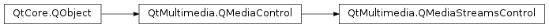

QMediaStreamsControl¶
Detailed Description¶
The
PySide2.QtMultimedia.QMediaStreamsControlclass provides a media stream selection control.The
PySide2.QtMultimedia.QMediaStreamsControlclass provides descriptions of the available media streams and allows individual streams to be activated and deactivated.The interface name of
PySide2.QtMultimedia.QMediaStreamsControlisorg.qt-project.qt.mediastreamscontrol/5.0as defined inQMediaStreamsControl_iid().See also
-
class
PySide2.QtMultimedia.QMediaStreamsControl([parent=nullptr])¶ Parameters: parent – PySide2.QtCore.QObjectConstructs a new media streams control with the given
parent.
-
PySide2.QtMultimedia.QMediaStreamsControl.StreamType¶ Media stream type.
Constant Description QMediaStreamsControl.AudioStream Audio stream. QMediaStreamsControl.VideoStream Video stream. QMediaStreamsControl.SubPictureStream Subpicture or teletext stream. QMediaStreamsControl.UnknownStream The stream type is unknown. QMediaStreamsControl.DataStream
-
PySide2.QtMultimedia.QMediaStreamsControl.activeStreamsChanged()¶
-
PySide2.QtMultimedia.QMediaStreamsControl.isActive(streamNumber)¶ Parameters: streamNumber – PySide2.QtCore.intReturn type: PySide2.QtCore.boolReturns true if the media stream
streamNumberis active.
-
PySide2.QtMultimedia.QMediaStreamsControl.metaData(streamNumber, key)¶ Parameters: - streamNumber –
PySide2.QtCore.int - key – unicode
Return type: Returns the meta-data value of
keyfor the givenstreamNumber.Useful metadata keys are QMediaMetaData::Title , QMediaMetaData::Description and QMediaMetaData::Language .
- streamNumber –
-
PySide2.QtMultimedia.QMediaStreamsControl.setActive(streamNumber, state)¶ Parameters: - streamNumber –
PySide2.QtCore.int - state –
PySide2.QtCore.bool
Sets the active
stateof media streamstreamNumber.Setting the active state of a media stream to true will activate it. If any other stream of the same type was previously active it will be deactivated. Setting the active state fo a media stream to false will deactivate it.
- streamNumber –
-
PySide2.QtMultimedia.QMediaStreamsControl.streamCount()¶ Return type: PySide2.QtCore.intReturns the number of media streams.
-
PySide2.QtMultimedia.QMediaStreamsControl.streamType(streamNumber)¶ Parameters: streamNumber – PySide2.QtCore.intReturn type: PySide2.QtMultimedia.QMediaStreamsControl.StreamTypeReturn the type of media stream
streamNumber.
-
PySide2.QtMultimedia.QMediaStreamsControl.streamsChanged()¶
© 2018 The Qt Company Ltd. Documentation contributions included herein are the copyrights of their respective owners. The documentation provided herein is licensed under the terms of the GNU Free Documentation License version 1.3 as published by the Free Software Foundation. Qt and respective logos are trademarks of The Qt Company Ltd. in Finland and/or other countries worldwide. All other trademarks are property of their respective owners.